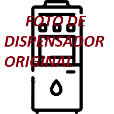

Este sistema tendrá la posibilidad de llenar un recipiente de agua de forma automática desde 300 ml hasta 1 lt, operado por un cliente a través de una pantalla raspberry con programación phyton. Para realizar el cobro al cliente, se utilizará una maquina verificadora de monedas programada para distintas denominaciones desde $1 hasta $10. Las principales funciones del sistema son la detección automática de la presencia del recipiente para llevar acabo el llenado. Esto se realiza por medio de un sensor de proximidad que detecte el recipiente. Así también se usaran microcontroladores y electroválvulas para abrir y cerrar en forma automática el suministro del agua.
Para medir el nivel del contenedor de agua se usará un sensor vía wifi conectado a una aplicación móvil android que notificará a un encargado del sistema cuando este se encuentre vacío, para posteriormente cambiarlo, así tambien evitando contratiempos.